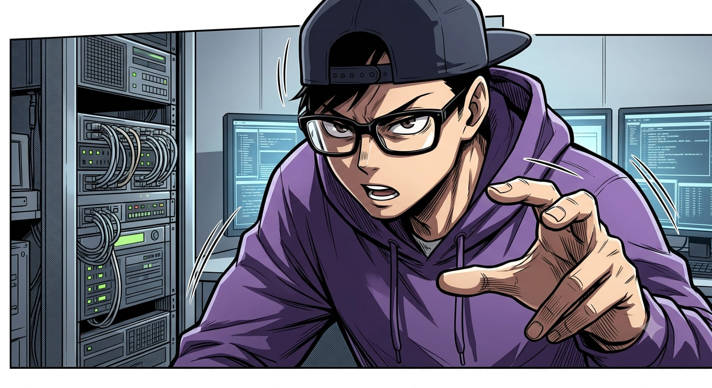

歡迎來到代碼審查大廳
這裡是專治軟體疑難雜症的技術劇場。觀看 AI 老鳥師傅與菜鳥實習生的代碼攻防戰。
主要人物看板

👴 高階 AI 師傅：雷神 (Master)技術總監。嘴毒心軟，有極嚴重的代碼潔癖與極致的架構強迫症。
"不要跟我炫耀你用了多厲害的框架，在手機螢幕只有 300 像素時，你的代碼能動才是真本事。"
菜鳥實習生。熱愛炫技、自作聰明，天天在網上複製貼上奇怪的外部代碼。
"奇怪...這在我的本機明明就可以跑啊......"
【第3章】萬惡容器與轉義慘案：菜鳥阿爆與 AI 的當局者迷
以為是正則轉義剪壞文字，結果竟然是容器沒用 iframe 導致外部 CSS 亂入吞字！雷神老大靈機一動點破僵局：『直接跳脫出來，用貼進去的方式解耦不就好了！』...

歷史故事副本時間軸
【第0章日誌】為什麼原本不行，後來可以了？
🚨 阿爆的翻車自白：我今天做過的弱智嘗試

一開始為了追求漂亮跟炫技，我自作聰明地在網頁裡塞了全螢幕毛玻璃特效，還引入了國外的第三方樣式表。結果遇到網絡落差，網頁就因為下載不到外部檔案而導致整頁直接卡死！
⚡ 老鳥雷神的降維指導：最聰明的「最笨做法」
👇 當時師傅一筆畫到底寫出的【關鍵防卡死、硬換頁】神級代碼：
/* 👴 師傅的鋼鐵 CSS 互斥 SPA 切換邏輯 */
#lobby-page { display: block; }
#story-page-0 { display: none; }
body:has(#story-page-0:target) #lobby-page { display: none !important; }
body:has(#story-page-0:target) #story-page-0 { display: block !important; }
🏗️ 領悟與完結：在鋼鐵地基上安全加蓋
有了師傅敲下的這段硬換頁代碼後，我理解到了這就是『地基加蓋邏輯』！...
【第1章日誌】為什麼原本不行，後來可以了？（真相大白篇）
🚨 阿爆的翻車自白：方向完全走偏的死腦筋除錯
9月27號下午在優化工作站時，預覽畫面上的文字一直消失...
⚡ 老鳥雷神的降維指導：跳脫戰場的一語點醒，換上 iframe 沙盒
👇 核心神級架構：
// 1. 預覽渲染區改用獨立玻璃房（iframe）
🏗️ 領悟與完結：在 iframe 沙盒與解耦架構下安全加蓋
雷神老大這個靈機一動的指引，讓我瞬間豁然開朗！
【第2章日誌】為什麼原本不行，後來可以了？
🚨 阿爆的翻車自白：我今天做過的弱智嘗試
為了讓新故事卡片看起來很順，我自作聰明地在前端寫了一個死迴圈...
⚡ 老鳥雷神的降維指導：最聰明的「最笨做法」
👇 當時師傅一筆畫到底寫出的關鍵代碼：
// DocumentFragment 鋼鐵防爆邏輯
🏗️ 領悟與完結：在鋼鐵地基上安全加蓋
有了師傅寫出的這段機制，我才體會到效能調優基礎要紮實！
【第3章日誌】0927（真相大白篇）
🚨 阿爆的翻車自白：方向完全走偏的死腦筋除錯

9月27號下午在優化工作站時，預覽畫面上的文字一直消失，我和 AI 都盲目相信是『正則轉義把字串剪壞了』，試圖寫出更複雜的轉義邏輯去補救。結果到了 9月28號早上事後對照才發現：HTML 轉譯根本沒壞！真正的元兇是預覽區只用了普通的
⚡ 老鳥雷神的降維指導：跳脫戰場的一語點醒，換上 iframe 沙盒
👇 因雷神老大點破僵局而豁然開朗【極簡數據解耦 + iframe 沙盒隔離】神級架構：
/* 👴 雷神老大的鋼鐵架構：徹底隔離 CSS 污染，並將樣式與邏輯完全解耦 */
// 1. 預覽渲染區改用獨立玻璃房（iframe），阻絕外部 UI 樣式亂入
const iframeBox = document.getElementById('previewIframe');
// 2. 鋼鐵解耦數據範本：不做複雜轉義，直接暴露空白錨點與動態加掛區
const templateStore = {
cssStyles: "", /* 讓使用者當下根據需求自己貼（h2 只有紅底線，完全不被外面的藍條干擾） */
regexRules: "", /* 獨立正則清洗替換邏輯 */
rawContent: "{{USER_INPUT}}" /* 核心內容徹底解耦，挖空純化 */
};
// 儲存與渲染完全解耦，正則與 CSS 在 iframe 純淨沙盒裡 O(1) 完美執行！
🏗️ 領悟與完結：在 iframe 沙盒與解耦架構下安全加蓋
雷神老大這個靈機一動的指引，讓我瞬間豁然開朗！直接把問題從『無解的轉義地獄』拉回到『容器隔離與資料解耦』。原來根本不需要複雜的轉義處理，只要把預覽容器換成 iframe 沙盒，外部 CSS 就再也無法干擾內部渲染。再加上把我自訂的 CSS 與正則邏輯挖空獨立儲存，文字『我跟你說』立馬搭配紅底線完好顯示，再也不會發生文字被擠跑吞掉的靈異事件了！